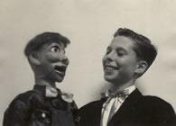
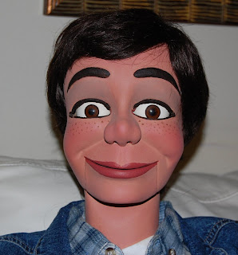

Kenny Warren figure
5/28/2010
{kind=link}

From Kenny Warren{kind=link}

Subject: Re: An old composition-type figure I donated to the Vent Haven Museum in 1966! It was a one of a kind paper mache type figure made by a puppet maker named "Walter DeLenz". The late John Carroll restored it way back ca. 1958....This old Polaroid photo (above) was taken by John Carroll on the very day I picked up the newly restored figure from his workshop upstairs of his sister's house which was on Myrtle Ave. here in Brooklyn, New York. You'll note that the clear preservative that was supposed to be fully/entirely placed onto the new photo has deteriorated in some areas, unlike my passion for ventriloquism!
The little boy in that photo was absolutely thrilled with the late John Carroll's fine restoration and it was my very first "professional, one of a kind" ventriloquist figure; I recall that as a gift he included a brand new set of hand carved wooden hands that matched everything perfectly. I treasured that little fellow very much. Memories, eh?
* * * * * *
Note from Mr. D" : The color photo here is current, showing Mr. Warren's Frank Marshall figure which recently received some repairs by our son, Kevin, and was repainted by me. Every time we touch one of these vintage figures we're making memories, yes, indeed!